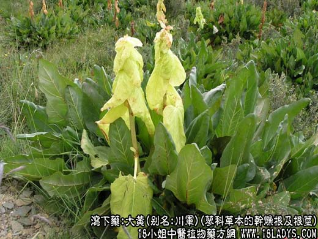
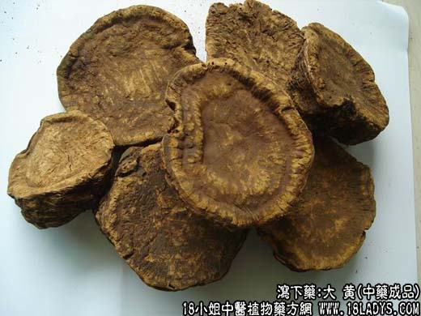
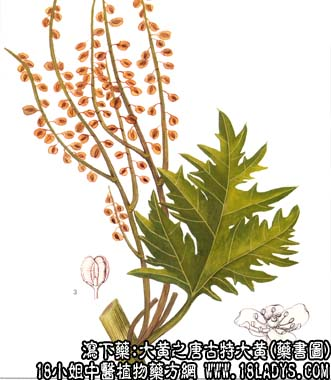

本品为常用中药。始载于《神农本草经》因此其个大色黄故名。
别名：川军、锦纹、生君。
来源：为蓼科多年生草本植物掌叶大黄（Rheum palmatum L, ）唐古特大黄（Rheum tanguticum Maxim. ex Balf ）或药用大黄（Rheum officinale Baill.）的干燥根及根茎，野生或栽培。
概述：大黄分布地区很广，以青海、甘肃、四川为主产区，此外云南、贵州、湖北、陕西等地亦产，由于产区、品种、野生与栽培以及加工方法的不同，性状气味，色泽等均有差异，因而在历史上形成品种规格繁多。过去甘肃所产的大黄，均冠以地名，如武都蛋吉，文县中吉，清水瓣子等，又各分若干等级。青海、甘肃多为掌叶大黄和唐古特大黄；四川、云南多为药用大黄。但原植物的分布地区，不能截然分开，四川也有掌叶大黄分布。为了简化繁锁名称，根据商品大黄的各种特点，并且照顾到历史用药习惯，商业部于1965年颁发了“三类药材100种商品规格试行标准”，把大黄归纳为六个品种。
性状鉴别：1、西大黄。系指青海、甘肃、甘南自治州，岷县等地所产野生品种，俗称“西宁大黄”，有蛋吉（个匀、整，形如鸭蛋者）；片吉（根头部，纵切瓣呈片状者）；中吉（根茎叶部的横切段）；苏吉（指尾根部、稍加闯光，并具原性状的楔状形），等。表面黄褐色，每块上有一阴干前穿绳的小孔。体重质坚实，断面槟榔碴，呈现红肉白筋、纹理清晰不乱（绵纹）。气清香，牙咬有砂砾感，味甘微苦。是大黄中的优良品。
西宁大黄箱黄与包黄两个规格，箱黄直径不得小于0.3厘米（中节和粗大的块根内碴不好的不做箱黄）去净粗皮和细皮闯光。包黄中兼有中节或药块，取净栓皮，表面黄褐色兼有暗棕色，体重质较松。断面红白相兼（槟榔碴）或黄色，纹理红白，气味同箱黄，长短大小不等，但直径不得小于0.15厘米。兼有糖心糠心不超过15%。
2、凉黄。系指甘肃武威（凉州），张掖及河西地区所产的野生品。根茎呈不规则块状似狗头俗称狗头大黄），或纵切成瓣，不去栓皮。表面黑褐色，有横皱纹及纵沟，体重质坚。断面红白相兼（槟榔碴）红肉白筋，纹理混乱。气清香，味甘苦。牙咬砂砾感更强，并有粘牙感，品质优，是大黄中的珍品。
3、铨水大黄。系治甘肃礼县、岷县、宕昌、武都等地（栽培品）酚蛋吉、片吉、中吉、苏吉四等。去净栓皮，表面黄褐色，质坚体重。断面红白相兼（槟榔碴），射线纹理清晰，涡形射线小点多数，呈不规则的环形排列，气清香，味道微苦涩，亦属大黄中优品。因其红度好，出口为主。
4、文大黄。系指甘肃武都地区及州、杆毗邻地带，包括清水。系根茎的纵切瓣段块。去净栓皮。表面黄色或黄棕色，质坚体重。断面红白相间（槟榔碴）或黄色，气香，味苦涩，品质略次。
5、雅黄。系指川西，德格及云南地区野生产品。商品呈马蹄形的块状，分为四等。1、2等去净栓皮。表面黄色或黄褐色或内外均呈黄绿色。质坚体重或质较轻松。断面无红肉白筋的纹理。3、4等不去栓皮。表面棕褐色，有横皱纹、质较轻松或轻泡，断面黄褐色或绿褐色。4等为不规则块状，大小不分，兼有根黄。（气微、味苦，习惯认为品质较次。）
6、南大黄。系指川东与湖北，贵州与陕西毗邻地区的雅黄栽种产品。根茎横切段，去净栓皮。表面黄褐色。质坚体重。断面黄色或黄绿色。气微香味涩而苦。
此外尚有：
① 水根大黄：系大黄的较细支根及主根尾段加工而成。直径在二厘米左右，长约5～10厘米。栓皮未去净。表面黄褐色，多纵皱。断面显绵纹。兼有部分闷碴黑褐色。是甘肃大黄的次品。
② 西藏大黄：昌都地区的产品，一部分与雅黄类似。但近年发展的地区如那曲、林芝的产品。规格尚未定型。多为长条瓣状，长6～15厘米，直径约3～6厘米，带皮或刮去栓皮不等。表面棕黄或棕褐色，多属用绳索穿挂，阴干或晒干，内碴多显绵纹。由于采挖时间恐怖不严，故内碴色泽深浅不一，质坚泡不等。加上原植物的种属杂乱，混进了部分非药用大黄，有待今后改进。
各种药用大黄均以体质量坚实，切瓣均匀，断面槟榔碴，气香、味甘、苦而不涩者为佳。
主要成分：1、蒽醌（enkun 读恩昆）衍生物，含量2%～4%，包括大黄素（C15H10O5）、大黄酚（C15H10O4）、大黄酸（C15H8O6）、芦荟大黄素（C15H10O5）等；2、大黄鞣甙类，主要为葡萄没食子鞣甙（C13H16O10）。此外还含有游离没食子酸。（注：化学数字在右下角）
功效与作用：1、泻下。大黄酸为泻下的主要有效成分，能刺激大肠，增加其推进性蠕动而促进排便，作用较缓和，服后6小时左右排除软泥状粪便或粥状稀便，缓下一次后即止。排便前后可无腹痛，或仅有轻微腹痛，与行气药（如厚朴）配用，能加强卸下和减少腹痛的副作用。
2、抗菌。有效成分为蒽醌生物，其中以大黄酸、大黄素和芦荟大黄素抗菌作用较强。体外试验最敏感的细菌为葡萄球菌、链球菌、其次为白喉杆菌、伤寒杆菌、副伤寒杆菌、肺炎双球菌、痢疾杆菌等。抑菌的原理是：这些蒽醌衍生物对细菌的核酸和蛋白质的合成明显抑制作用。
3、收敛。由于鞣酸所致，故大黄致泻后常出现便秘倾向。
4、健胃。取其苦味健胃，服小量粉剂（0.6g~0.9g）即起作用。
5、利胆。实验证明能显著增加胆汁流量，适用于治疗胆石。
6、抗肿瘤。动物实验证明，大黄酸、大黄素对小鼠黑色素瘤有明显抑制作用；大黄素对小鼠乳腺癌，大黄酸对艾氏癌（腹水型）也有抑制作用。但临床尚未应用单味大黄作为抗癌药（某些抗癌的中药复方有用大黄）。
炮制：切片，生用。酒炒、醋炒、炒炭。切1厘米块，加酒蒸熟（熟军）。
性味：苦寒。
归经：归脾、胃、大肠、肝、心包经。
功能：泻下通肠，行瘀破积、外敷清火消肿。
主治：肠胃实热积滞，血分实热证，黄疸，水肿， 瘀血积聚。外服痈肿疮毒，水火烫伤。
临床应用：主要用于通便、泻热、消炎。1、用于热积便秘。在许多热性感染性疾病（如大叶性肺炎、流行性脑膜炎）的中期或极期，出现便秘、胸腹满闷、高热、谵（zhan 读占）语、口渴、舌苔老黄等实热证候时，可用大黄荡涤积热，常配枳实、厚朴同用，如小承气汤，或与其他清热药通用，如凉嗝散。如果失水严重，须配养阴药生地、麦冬等。方如增液承气汤。
患者服上述泻下剂通便后，往往收到退热和全身情况好转的效果，其原理可能由于：①大黄本身和其他清热药有抗菌消炎作用；②便秘时，由于肠内腐败物产生的毒素吸收入血液，加重全身不适，通便后可免除这一不良作用；③通便后，能接触腹满胀闷等症状，使患者感到轻快。
2、用于治疗湿热黄疸。如患急性传染性肝炎，甚至亚急性黄色肝萎缩，有黄疸、腹胀、便秘时，可用大黄、配栀子、茵陈、厚朴、枳实等，有消炎清热作用。
3、用于热泻（如急性肠炎、细菌性痢疾等）早期。此时患者虽有腹泻，但泻而不清，便可不畅，肠内迭积存有腐败物质和有炎性病变，可用大黄把肠内有形的腐败积存物排出。有利于抑制细菌的繁殖和控制炎症。大黄的这种用法叫做“通因通用”，以泻止泻。例如治热痢早期的芍药汤就有大黄。但药注意在热泻的后期，只有炎性分泌物时，则不宜用大黄。
4、用于寒积便秘。治疗便秘而有腹痛和全身虚寒证候，可用大黄，配温里祛寒药附子、细辛等，以散寒、通便、止痛，方如大黄附子汤。
5、用于治疗急性眼结膜炎、上呼吸道炎等所谓“血热在上”的证候。此时有发热、头胀目赤、咽肿等症状，通过用大黄泻下，使腹腔充血，反射性地减轻头面部的充血，因而有助于减轻上述炎症。每与黄芩、黄连等清热药同用，较重者用凉膈散。
6、用于凉血止血，治疗热性出血。如痔疮出血等由大便热结、肠有热滞而引起者，单用大黄12～15g炒黑后水煎服；鼻出血兼有便秘者，可用生地9g煎服，冲服大黄（研末）4.5~9g。
8、用于治疗跌打损伤，取其有活血行瘀（调整血液分布）作用。例如腹部挫伤后，瘀血停滞、大便干结时，可在跌打方剂内加入大黄3～4.5g，或单用大黄研末用酒调服。又用大黄、甘黄（10：2）的极细粉末，可治下肢溃疡。
使用注意：1、生大黄泻下力较强，适用于清泻实热；酒制后消炎活血之力较好；体虚或用制大黄也比较适宜。
2、胎前慎用（因有促进子宫收缩的所用）；产后和月经期间慎用（因能加重盆腔充血）；哺乳妇忌用（因大黄在肠道吸收后随血流分布到乳汁，影响胎儿。哺乳妇如多服大黄，乳汁也会变黄）。
3、用于泻下，大黄不宜久煎，故须后下；用于清湿热，则煎煮时间可稍长些。
4、习惯性便秘一般不宜用大黄，可用润下药。
用量：常用量3～12g。泻下往往要用9~12g，如果配有行气药，有时也额可只用6g，如为加强其他攻下药作用，甚至药用到12g以上。请湿热和消炎用量宜少，成人6g，小孩3g，幼婴0.9~1.5g。
处方举例：1、小承诺气汤（《伤寒论》）。生大黄12g（后下），厚朴6g，枳实9g，水煎服。
2、凉膈散（《局方》）。生大黄9g（后下)，芒硝9g，栀子9g，连翘9g，黄芩6g，薄荷3g（后下），竹叶6g，甘草6g，水煎服。
3、增液承气汤（《温病条辨》）。玄参30g，生地24g，麦冬24g，生大黄9g（后下），芒硝4.5g（冲），水煎服。
4、大黄附子汤（《金匮要略》）。大黄9g（后下），附子9g，细辛3g，水煎服。
注：土大黄：别名羊蹄，牛西西。为蓼科酸模属多年生草本植物土大黄的干燥根部。全国皆产，天津、北京有分布，野生。主根圆锥形有分歧。表面棕褐色，有顺纹，质坚硬，断面淡黄白色，显放射状纹理。味苦。有清热、止血、杀虫、治癣效用。
根据《天津中草药》记载。本品适用于各种出血疾病患，如对肺、胃、肠、子宫、泌尿系统出血及外伤等，水煎服或制针剂注射，均有较好止血疗效。
附：非药用大黄，本品为蓼科波叶大黄及同属植物的根和根茎。多供出口外销，野生或栽培，如山西、河北的野生籽黄；栽培的台黄、祁黄。陕西、内蒙古野生的峪黄及甘肃的庄浪大黄。这些产品的性状，多数为节段，已刮去栓皮。表面黄色或黄棕色。断面紫棕红色或淡黄棕色，显锦纹，呈放射状纹理，并显数层同心环纹，而无涡状星点。气特异、腥香、味苦。出口作为工业染料的原料。
据经验认为本品力猛，有横劲，服后使人肠腹胀痛，故不药用。但有少数地区作兽用泻五药，以上数种非药用大黄，其原植物科属是否同一，化学成分是否一样，有待今后研究。据《中药志》记载，本品在萤光灯下显蓝紫色萤光。